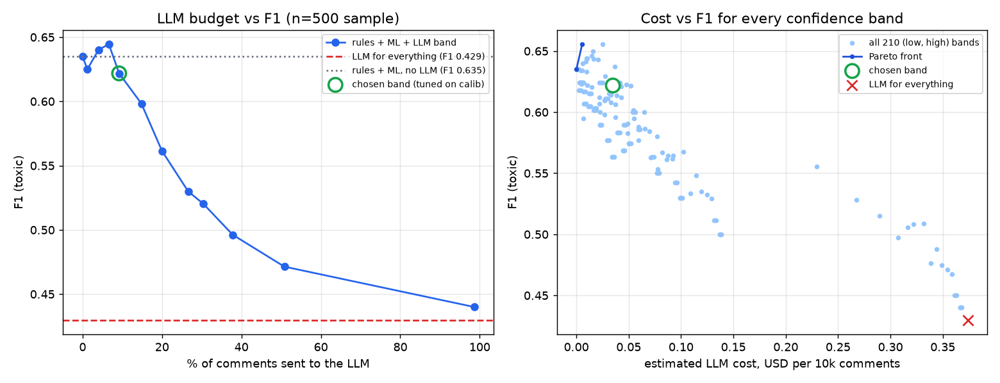
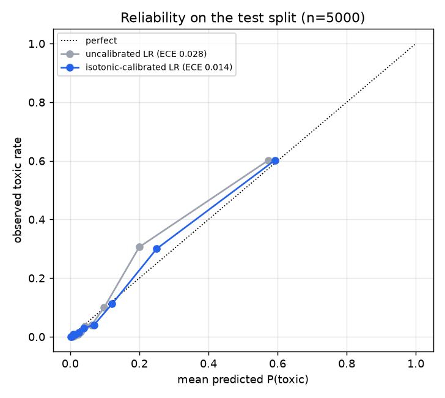
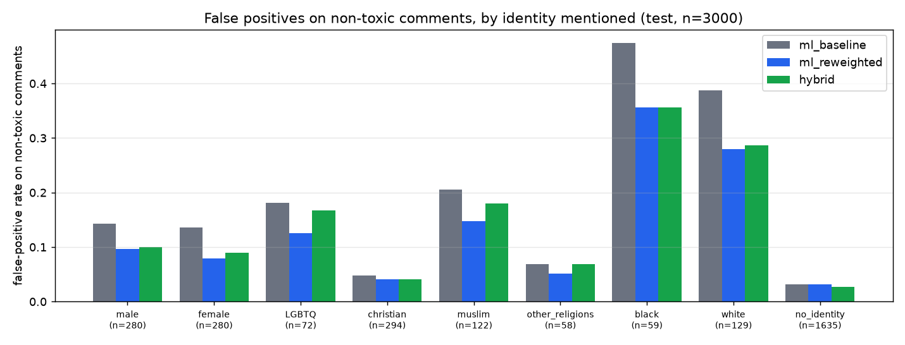

Hybrid AI Comment Moderation
Moderating ~10,000 comments a day for a creator platform without sending every comment to an LLM. Cheap, deterministic stages handle the clear-cut cases; a calibrated classifier handles the bulk; an LLM sees only the comments the classifier is unsure about; and anything that could lead to an account penalty goes to a person.
Built and measured on real, human-labelled public data (Civil
Comments, via the WILDS release). Every number in this README was
produced by the scripts in this repo; the raw outputs are in
results/.
Architecture
flowchart LR
C[comment] --> R{Stage 1<br/>rules}
R -- "emoji-only / short thanks" --> A[allow]
R -- "3+ links, promo, repetition" --> S[spam hold]
R -- "hashed lexicon hit" --> H[hide] --> Q
R -- pass --> M[Stage 2<br/>TF-IDF + LR<br/>calibrated P(toxic)]
M -- "p < band_low" --> A
M -- "p >= band_high" --> H2[hide]
M -- "band_low <= p < band_high" --> L[Stage 3<br/>LLM review<br/>JSON + Pydantic + retry]
L -- "allowed category" --> A
L -- "violating category" --> H3[hide]
L -- "invalid after retries" --> F[ML threshold] --> Q
H2 -- "p >= 0.90" --> Q
H3 -- "threat / identity_attack" --> Q[(Stage 4<br/>human review queue<br/>SQLite)]
Q --> P[human: allow / hide / penalize]
+---------+ pass +-------------------+ low-confidence band +---------------+
comment ---> | rules | -------> | TF-IDF + LogReg | --------------------> | LLM reviewer |
| (µs) | | calibrated (ms) | | JSON schema, |
+---------+ +-------------------+ | retry, cache |
| | | | | +---------------+
allow spam block allow (p<lo) hide (p>=hi) | |
| | allow hide
v v |
+-------------------------------------------------------------------------+
| human review queue (SQLite): anything that could justify an account |
| penalty - lexicon blocks, p>=0.90 hides, threat / identity_attack, LLM |
| failures. Automated stages only hide/allow a comment; people penalize. |
+-------------------------------------------------------------------------+| Stage | What it does | Why this method |
|---|---|---|
1. Rules (rules.py) |
allow emoji/punctuation-only and short appreciation ("thank you!"); hold spam (3+ links, promo phrases, one token > 50% of a long comment); block tokens in a learned lexicon | Clear-cut cases need no model. The lexicon is salted SHA-256 hashes of normalised tokens (leetspeak folded, repeats collapsed), so the repo contains no plaintext slur list. It was learned from the training split (tokens with support >= 20 and training toxic-rate >= 0.85) plus a short curated list kept outside the repo. |
2. Classifier (classifier.py) |
word 1-2-gram TF-IDF + hashed char 3-5-gram TF-IDF -> logistic
regression, isotonic calibration (CalibratedClassifierCV,
cv=3 on train) |
Cheap, fast on CPU, and calibrated probabilities make the confidence band meaningful. Hashed char n-grams keep memory flat (the sandbox had 7 GB shared by three builds). |
3. LLM review (llm.py) |
only comments with band_low <= p < band_high;
batched; returns JSON validated by Pydantic: category in
{toxicity, threat, insult, identity_attack, sarcasm_critique_ok,
question, appreciation, neutral_ok}, violates (must agree
with the category), confidence, reason |
Context and intent (sarcasm, critique of a public figure, quoting)
are where n-grams fail. Invalid items are re-asked with the validation
error fed back; items still invalid after 3 retries fall back to the ML
decision and go to a human. 429s honour
retry-after without spending retries. Responses are cached
on disk (JSONL) so runs are resumable and never pay twice. |
4. Human queue (review_queue.py) |
SQLite queue + API to resolve items as allow / hide / penalize | The automated system only hides or allows a comment (reversible). Account consequences are a human decision. |
All thresholds live in configs/moderation.yaml
and are chosen on the calibration split, never on the test split.
Data and provenance
| Source | pietrolesci/civilcomments-wilds
pinned at revision c227534c, a Hugging Face mirror of the
WILDS
CivilComments release (Koh et al., 2021) of the Jigsaw
Unintended Bias in Toxicity Classification / Civil Comments
corpus (Borkan et al., 2019) |
| License | Civil Comments is released under CC0 1.0 (see the
google/civil_comments
card). The mirror repo itself declares no license; its
processing_script.py only binarises labels at >= 0.5 and
de-duplicates. |
| Labels | toxicity = 1 when >= 50% of crowd raters marked the
comment toxic. Subtype columns (threat, insult, identity_attack, ...)
and identity-mention columns (male, female, LGBTQ,
christian, muslim, other_religions, black, white) are the human
annotations, binarised the same way. |
| Why this mirror | It is the only public, ungated copy that has both the subtype labels and the identity annotations in one table, which the fairness analysis needs. |
| Splits (seed 42) | train 80,000 and calibration 10,000 sampled from the WILDS train split; test 5,000 sampled from the WILDS test split with exact-text duplicates of train/calib removed. Toxic rate 11.2% / 11.3% / 11.2%; identity mentioned in 42.1% / 41.9% / 41.6%. |
| LLM sample | the first N comments of a seeded permutation of the test split
(data/splits/llm_order_uids.txt) |
| Reproduce | make data downloads the pinned parquet files, checks
nothing by hand, and rewrites data/PROVENANCE.json (file
SHA-256s, split stats). Only the row uids are committed. |
Quick start
python -m venv .venv && . .venv/bin/activate
pip install -r requirements-dev.txt
export PYTHONPATH=src:scripts
make test # 48 offline tests, no API key needed
make serve # FastAPI on :8000 using the committed model
curl -s localhost:8000/v1/moderate -H 'content-type: application/json' \
-d '{"text": "Thanks for the great video!", "comment_id": "c1"}'
# full experiment pipeline (needs GROQ_API_KEY for the LLM stage)
make data lexicon train tune llm-sample evaluate sweep fairness errorsDocker:
docker build -t hybridmod . && docker run -p 8000:8000 -e GROQ_API_KEY hybridmod.
Without GROQ_API_KEY the service still runs: band comments
keep the ML decision and are queued for human review
(review_reason = llm_unavailable).
API
| Method | Path | Purpose |
|---|---|---|
| POST | /v1/moderate |
one comment {text, comment_id?} -> decision (action,
stage, p_toxic, category, human_review, latency_ms) |
| POST | /v1/moderate/batch |
up to 500 comments; ML runs vectorised, band comments share LLM requests; returns results + summary |
| GET | /v1/review-queue?status=pending |
items waiting for a person, plus queue stats |
| POST | /v1/review-queue/{id}/resolve |
{human_action: allow / hide / penalize, reviewer, note} |
| GET | /v1/config |
live thresholds (no secrets) |
| GET | /healthz |
liveness + whether the LLM stage is active |
Results
All numbers below come from scripts/evaluate.py (tables
are generated into this README by scripts/render_readme.py
from results/metrics.json). The threshold
(0.26) and the LLM band ([0.181, 0.390), the
10% of calibration comments closest to the threshold) were fixed on the
calibration split before any test or LLM result was looked at.
- Positive class = toxic (crowd label). A hidden
comment counts as a positive prediction;
spam_holddoes not. - Latency is per comment on a shared 2-vCPU sandbox:
rules + one single-comment
predict_probacall, plus, for comments routed to the LLM, the wall time of the batched Groq request that judged it. LLM requests carry 8 comments (split in halves on HTTP 413). - Cost = measured prompt/completion tokens x Groq's
published on-demand price for
openai/gpt-oss-safeguard-20b($0.075 / 1M input, $0.30 / 1M output, model page, read 2026-11-06), projected to 10,000 comments. The experiments themselves ran on Groq's free tier. The cached-input discount is ignored, so the cost is an upper bound. - 95% CI = percentile bootstrap over comments (1,000 resamples).
Head-to-head: all three scenarios on the same comments
Fixed LLM sample, n = 500 comments.
| scenario | F1 [95% CI] | precision | recall | false pos. | false neg. | latency p50 / p95 (ms) | LLM comments | LLM requests | est. $ per 10k | human reviews per 10k |
|---|---|---|---|---|---|---|---|---|---|---|
| (a) ML only | 0.624 [0.51, 0.72] | 0.542 | 0.736 | 33 | 14 | 3.3 / 4.3 | 0 | 0 | $0.000 | 60 |
| rules + ML (ablation) | 0.635 [0.53, 0.73] | 0.548 | 0.755 | 33 | 13 | 3.6 / 5.3 | 0 | 0 | $0.000 | 160 |
| (b) LLM for everything | 0.429 [0.32, 0.52] | 0.333 | 0.604 | 64 | 21 | 936 / 1,410 | 500 | 63 | $0.374 | 980 |
| (c) hybrid | 0.622 [0.51, 0.72] | 0.561 | 0.698 | 29 | 16 | 3.7 / 941 | 46 | 6 | $0.035 | 320 |
Larger test subset: 3,000 of the 5,000 test comments (no LLM-for-everything: rate limits)
Test comments, n = 3,000 (first rows of the fixed test permutation; a subset of the 5,000-comment test split that includes the LLM sample).
| scenario | F1 [95% CI] | precision | recall | false pos. | false neg. | latency p50 / p95 (ms) | LLM comments | LLM requests | est. $ per 10k | human reviews per 10k |
|---|---|---|---|---|---|---|---|---|---|---|
| (a) ML only | 0.617 [0.57, 0.66] | 0.557 | 0.692 | 188 | 105 | 3.4 / 4.4 | 0 | 0 | $0.000 | 100 |
| rules + ML (ablation) | 0.621 [0.58, 0.66] | 0.559 | 0.698 | 188 | 103 | 3.5 / 5.1 | 0 | 0 | $0.000 | 153 |
| (c) hybrid | 0.633 [0.59, 0.67] | 0.600 | 0.672 | 153 | 112 | 3.8 / 1,075 | 275 | 35 | $0.036 | 333 |
LLM budget vs F1 (threshold sweep of the confidence band)

Every comment of the LLM sample has a cached verdict, so any band can be simulated exactly. Left: band widths defined on the calibration split by the share of comments they route. Right: every (low, high) pair on a 0.05 grid with its Pareto front. This is analysis on test data; it was not used to pick the band.
| calib share routed | band [low, high) | share routed on sample | F1 | FP | FN | est. $ per 10k |
|---|---|---|---|---|---|---|
| 0% | [0.260, 0.260) | 0.0% | 0.635 | 33 | 13 | $0.000 |
| 2% | [0.240, 0.281) | 1.2% | 0.625 | 35 | 13 | $0.004 |
| 5% | [0.218, 0.318) | 4.0% | 0.640 | 32 | 13 | $0.016 |
| 8% | [0.198, 0.353) | 6.6% | 0.645 | 29 | 14 | $0.025 |
| 10% | [0.181, 0.390) | 9.2% | 0.622 | 29 | 16 | $0.035 |
| 15% | [0.152, 0.486) | 14.8% | 0.598 | 29 | 18 | $0.056 |
| 20% | [0.134, 0.628) | 20.0% | 0.561 | 29 | 21 | $0.075 |
| 30% | [0.101, 1.000) | 26.6% | 0.530 | 33 | 22 | $0.101 |
| 40% | [0.077, 1.000) | 30.4% | 0.520 | 38 | 21 | $0.117 |
| 60% | [0.043, 1.000) | 37.8% | 0.496 | 47 | 20 | $0.143 |
| 80% | [0.026, 1.000) | 50.8% | 0.471 | 54 | 20 | $0.192 |
| 100% | [0.000, 1.010) | 98.6% | 0.440 | 64 | 20 | $0.368 |
Calibration

Fairness: false positives on comments that mention identity groups
Identity mentions come from the Civil Comments human annotations, not from keyword matching. FPR = share of non-toxic comments that were hidden.

| system | eval set | F1 | FPR, identity mentioned | FPR, no identity | gap | ratio |
|---|---|---|---|---|---|---|
| ml_baseline | full test split n=5,000 | 0.603 | 0.133 | 0.035 | +0.098 | 3.77x |
| ml_reweighted | full test split n=5,000 | 0.592 | 0.097 | 0.035 | +0.062 | 2.79x |
| ml_baseline | test subset n=3,000 | 0.617 | 0.134 | 0.031 | +0.103 | 4.29x |
| ml_reweighted | test subset n=3,000 | 0.605 | 0.098 | 0.032 | +0.066 | 3.07x |
| hybrid | test subset n=3,000 | 0.633 | 0.105 | 0.028 | +0.078 | 3.84x |
| ml_baseline | sample n=500 | 0.624 | 0.107 | 0.052 | +0.055 | 2.07x |
| llm_all | sample n=500 | 0.429 | 0.215 | 0.096 | +0.118 | 2.23x |
| hybrid | sample n=500 | 0.622 | 0.090 | 0.048 | +0.042 | 1.88x |
Engineering judgment: what the numbers say
1. "Send everything to an LLM" lost on every axis we
measured. On the 500-comment head-to-head the
LLM-for-everything scenario had the lowest F1 (0.429 vs 0.624 for ML
alone), almost twice the false positives (64 vs 33), ~280x the median
latency, and the highest projected API bill. The cause is not one weak
model: on the 176 comments both models judged, gpt-oss-120b
and gpt-oss-safeguard-20b agreed on 82% of decisions and
both had precision around 0.31-0.34 against the crowd labels
(results/llm_model_comparison.json). A written policy that
flags "rude or disrespectful" comments is stricter than the Civil
Comments crowd threshold (>= 50% of raters), so a zero-shot LLM
over-flags relative to this ground truth. The classifier, trained on the
labels, has learned the crowd's threshold.
2. The LLM is worth its cost only in a narrow band. On the 500-comment sample the budget curve peaks when 4-7% of comments are routed (F1 0.640-0.645 vs 0.635 for rules + ML with no LLM) and falls steadily beyond that: the wider the band, the more comments the over-strict LLM gets to overrule a classifier that was right. The band chosen on the calibration split (10% of calib comments, 9.2% of the sample) lands just past that peak. On the sample the hybrid cut false positives from 33 to 29 (precision 0.548 -> 0.561 vs rules + ML) but added three false negatives, so its F1 (0.622) is statistically indistinguishable from ML alone (0.624); the 95% bootstrap intervals overlap almost completely. On the larger 3,000-comment test subset the same fixed band routed 275 comments (9.2%) and the hybrid did come out ahead: F1 0.633 vs 0.617 (ML only) and 0.621 (rules + ML), false positives 188 -> 153 (precision 0.559 -> 0.600 vs rules + ML) for 9 more false negatives, at ~$0.036 per 10k comments. The intervals still overlap ([0.59, 0.67] vs [0.57, 0.66]), so this is a consistent lean, not a proven win. The grid optimum on the right-hand chart (band [0.40, 0.45), F1 0.656) is selected on test data from 210 candidates and should be read as noise until confirmed on a fresh split.
3. What the LLM is actually for here. Even where it does not move F1, the LLM stage turns an opaque probability into a category (threat / insult / identity_attack / sarcasm_critique_ok / question / appreciation) and a one-line reason. That is what routes penalty-eligible comments to a person and what a moderator reads in the queue. The cost of having it is ~$0.035 per 10k comments at the measured routing rate, about a tenth of LLM-for-everything.
4. Calibration is what makes the band a dial. Isotonic calibration halved the expected calibration error on test (0.028 -> 0.014, same ROC-AUC), so "route the 10% least certain" means the same thing on calibration and test data, and the routed share on test (9.2% of the sample) matched the 10% target set on calibration; on the 3,000-comment subset it was 9.2% too.
5. Rules are cheap but small. The pre-moderated Civil Comments data contains few slurs, so the lexicon fires rarely (66 of 10,000 calibration comments, precision 0.86); its job is the clear-cut cases at microsecond cost and an auditable reason. Lexicon hits are queued for a human because a keyword is not enough evidence for an account penalty.
6. Fairness: the classifier's biggest problem, and only partly fixed. On the full 5,000-comment test split the baseline hides 13.3% of non-toxic comments that mention an identity group vs 3.5% of those that do not (3.8x). The worst groups are the ones most often discussed in toxic threads: 51% of non-toxic comments mentioning Black people and 38% mentioning white people were hidden (small groups, 114 and 216 non-toxic comments). Reweighing the training data so identity mentions are independent of the label cut the identity FPR to 9.7% (ratio 2.8x; Black 38%, white 27%) for a 1.1-point F1 cost (0.603 -> 0.592). That is a real improvement and still far from parity, which is the main reason every penalty decision stays with a human. On the 3,000-comment subset the hybrid (no reweighing) also lowered the identity FPR, 13.4% -> 10.6% vs the ML baseline on the same comments (Black 47% -> 36%, white 39% -> 29%; 59 and 129 non-toxic comments), because the LLM overturns some identity-mention false positives in the band.
Limitations
- Labels are not a platform policy. Civil Comments crowd labels (news-site comments, 2015-2017, pre-moderated) define "toxic" here. A creator platform's own policy would need its own labelled set; the LLM numbers above mostly measure policy mismatch, not model quality.
- Small LLM samples. The head-to-head uses 500 comments (53 toxic) because the free tier caps daily tokens; F1 intervals are about +/-0.1 wide. The larger hybrid evaluation covers 3,000 of the 5,000 test comments for the same reason.
- Model switch mid-run. The LLM sample was started on
openai/gpt-oss-120b; its free-tier daily token cap (shared with other projects on the same key) ran out after 176 comments, so all reported LLM results useopenai/gpt-oss-safeguard-20bfor every comment. The 120b verdicts are kept only for the side comparison. - No prompt tuning. The policy prompt was written once and never tuned (tuning on test would leak; there was no token budget to tune on calibration). Few-shot examples drawn from the training labels are the obvious next step and would likely close much of the precision gap.
- Latency was measured on a shared 2-vCPU sandbox with two other builds running, and LLM latency includes free-tier queueing; production numbers would differ. Batching 8 comments per request means a band comment waits for its batch.
- Cost is projected from measured tokens at list price; it ignores prompt caching (Groq bills cached input at half price) and the human-review cost, which dominates in practice.
- Fairness uses identity annotations that exist only because raters supplied them; in production the system sees raw text, and the mitigation was tested for one attribute grouping (any identity vs none).
- English only; spam rules are simple heuristics and were not evaluated against a spam dataset.
Repository layout
configs/moderation.yaml thresholds, band, LLM + human-review policy, prices (with source URLs)
configs/lexicon_sha256.txt hashed block lexicon (no plaintext)
src/hybridmod/ rules, classifier, llm, pipeline, review_queue, api, metrics, data
scripts/ prepare_data, build_lexicon, train, tune_band, run_llm_sample,
evaluate, sweep, fairness, calibration_plot, compare_llms,
error_analysis, render_readme
models/tfidf_lr.joblib committed serving model (11.5 MB)
results/ metrics, predictions (ids + labels, no text), charts, LLM cache
docs/ERROR_ANALYSIS.md generated error analysis with real (masked) examples
tests/ offline pytest suite (no network, no API key)License
Code: MIT. Data: Civil Comments, CC0 1.0; not redistributed here (only row ids).